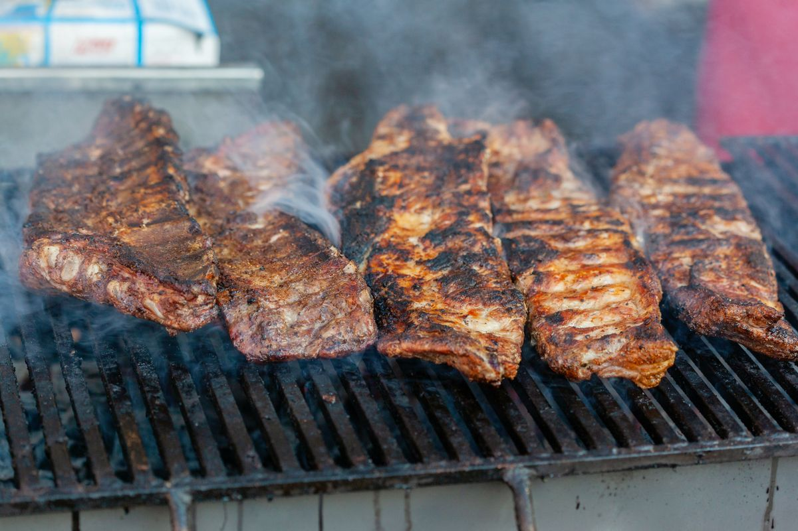

Ribs
Barbecue ribs, slow-cooked over charcoal and hickory.
Chatt Smoke House
Chattanooga, Tennessee

Chatt Smoke House is a barbecue restaurant in Chattanooga, Tennessee. Owner James Massengill has run the restaurant at its MLK Boulevard location for more than seven years. Meats are slow-cooked daily over charcoal and hickory with original rubs and sauces.
Call to book: (423) 468-4978Barbecue ribs, slow-cooked over charcoal and hickory.
Pulled pork from the smoker.
Texas-style brisket, cooked daily.


All photos on this page are stock photos, not photos of this business.
416 E ML King Blvd, Chattanooga, TN 37403
Plan a visitCall: (423) 468-4978